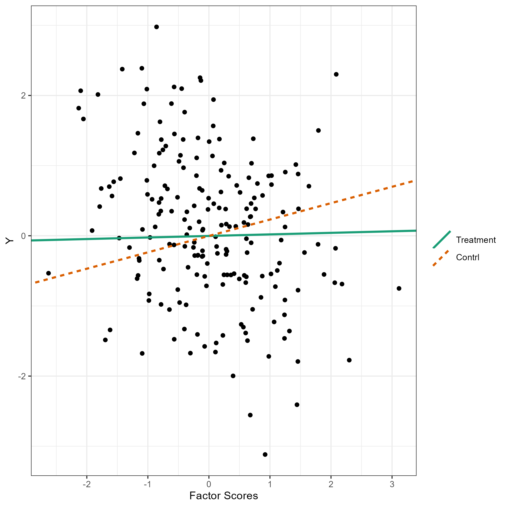
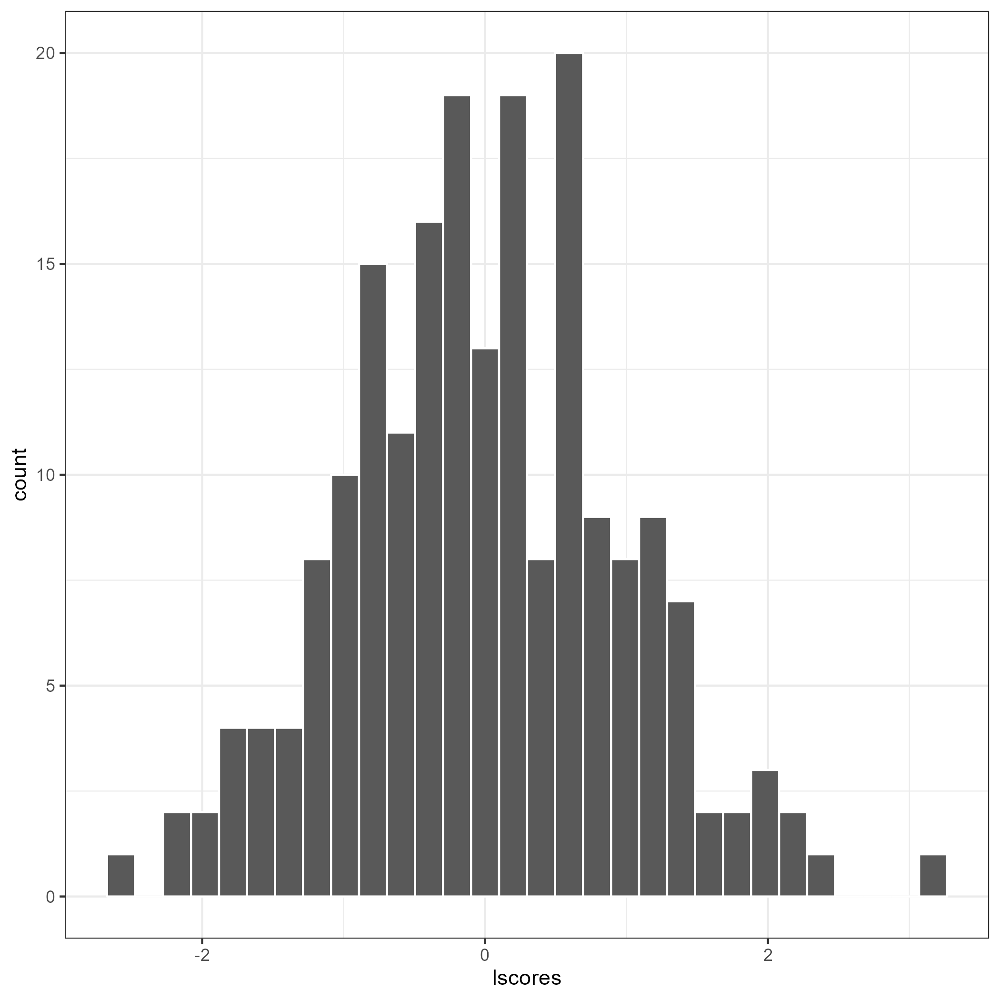

Fully Latent Principal Stratification (FLPS)1
Fully Latent Principal Stratification (FLPS) is an extension of principal stratification.
Installation
Install the latest release from CRAN or git repository:
devtools::install_github("sooyongl/flps")Basic working example
Load Example Data
-
binary: a data frame containing all the data for FLPS. It is used inrunFLPSfunction. - This data will be converted to a list of data for
rstanpackage. - For latent variable models, Rasch, 2PL, GRM, and SEM (one-factor CFA) are available.
# Input data matrix
data.table::data.table(binary)## schid id sex race pretest stdscore trt Y q1 q2 q3 q4 q5 q6 q7 q8
## 1: 1 2383 0 1 20 -0.3296 1 -0.487 0 NA 1 1 1 1 1 NA
## 2: 1 2384 1 0 8 1.1597 1 0.487 1 NA 1 1 1 1 1 1
## 3: 1 2385 0 1 14 -0.7385 1 -1.073 0 NA 1 1 0 NA NA NA
## 4: 1 2387 0 1 12 -1.3518 1 -1.087 0 NA 1 1 1 NA NA NA
## 5: 1 2388 0 1 6 -1.2057 1 -1.171 0 NA 1 1 NA NA NA NA
## ---
## 4762: 63 4761 0 1 16 0.6457 0 -0.114 0 NA NA NA NA NA NA NA
## 4763: 63 4763 0 0 11 0.3168 0 -0.438 0 NA NA NA NA NA NA NA
## 4764: 63 4764 0 0 18 -0.4114 0 -1.047 0 NA NA NA NA NA NA NA
## 4765: 63 4765 1 0 31 2.2116 0 0.765 0 NA NA NA NA NA NA NA
## 4766: 63 4766 1 1 13 -0.0668 0 0.539 0 NA NA NA NA NA NA NA
## q9 q10 q11 q12 q13 q14 q15 q16 q17 q18 q19 q20
## 1: NA NA NA NA NA NA NA NA NA NA NA NA
## 2: 1 1 1 1 NA NA NA NA NA NA NA NA
## 3: NA NA NA NA NA NA NA NA NA NA NA NA
## 4: NA NA NA NA NA NA NA NA NA NA NA NA
## 5: NA NA NA NA NA NA NA NA NA NA NA NA
## ---
## 4762: NA NA NA NA NA NA NA NA NA NA NA NA
## 4763: NA NA NA NA NA NA NA NA NA NA NA NA
## 4764: NA NA NA NA NA NA NA NA NA NA NA NA
## 4765: NA NA NA NA NA NA NA NA NA NA NA NA
## 4766: NA NA NA NA NA NA NA NA NA NA NA NAModel Fitting with FLPS
runFLPSinternally converts binary into the data format for rstan and executes FLPS.To avoid re-compiling the Stan code each time, pre-compile it using
modelBuilder(), which stores the stanmodel object in theflpsdirectory, accelerating subsequent analyses.
modelBuilder(type = "rasch")- In case of errors, try the latest
rstanandStanHeaderspackages.
remove.packages(c("rstan", "StanHeaders"))
install.packages("rstan", repos = c("https://mc-stan.org/r-packages/", getOption("repos")))Now, execute your FLPS model.
# Subset of data: 1000 students
binary <- binary[c(sample(which(binary$trt == 1), 500), sample(which(binary$trt == 0), 500)),]
res <- runFLPS(
inp_data = binary,
outcome = "Y",
trt = "trt",
covariate = c("sex","race","pretest","stdscore"),
lv_type = "rasch",
lv_model = "F =~ q1 + q2 + q3 + q4 + q5 + q6 + q7 + q8 + q9 + q10",
stan_options = list(iter = 5000, cores = 1, chains = 2)
)## Compiling Stan code...
##
## SAMPLING FOR MODEL 'anon_model' NOW (CHAIN 1).
## Chain 1:
## Chain 1: Gradient evaluation took 0.002666 seconds
## Chain 1: 1000 transitions using 10 leapfrog steps per transition would take 26.66 seconds.
## Chain 1: Adjust your expectations accordingly!
## Chain 1:
## Chain 1:
## Chain 1: Iteration: 1 / 5000 [ 0%] (Warmup)
## Chain 1: Iteration: 500 / 5000 [ 10%] (Warmup)
## Chain 1: Iteration: 1000 / 5000 [ 20%] (Warmup)
## Chain 1: Iteration: 1500 / 5000 [ 30%] (Warmup)
## Chain 1: Iteration: 2000 / 5000 [ 40%] (Warmup)
## Chain 1: Iteration: 2500 / 5000 [ 50%] (Warmup)
## Chain 1: Iteration: 2501 / 5000 [ 50%] (Sampling)
## Chain 1: Iteration: 3000 / 5000 [ 60%] (Sampling)
## Chain 1: Iteration: 3500 / 5000 [ 70%] (Sampling)
## Chain 1: Iteration: 4000 / 5000 [ 80%] (Sampling)
## Chain 1: Iteration: 4500 / 5000 [ 90%] (Sampling)
## Chain 1: Iteration: 5000 / 5000 [100%] (Sampling)
## Chain 1:
## Chain 1: Elapsed Time: 445.085 seconds (Warm-up)
## Chain 1: 171.302 seconds (Sampling)
## Chain 1: 616.387 seconds (Total)
## Chain 1:
## Warning: There were 1 chains where the estimated Bayesian Fraction of Missing Information was low. See
## https://mc-stan.org/misc/warnings.html#bfmi-low
## Warning: Examine the pairs() plot to diagnose sampling problems
## Warning: Bulk Effective Samples Size (ESS) is too low, indicating posterior means and medians may be unreliable.
## Running the chains for more iterations may help. See
## https://mc-stan.org/misc/warnings.html#bulk-ess
## Warning: Tail Effective Samples Size (ESS) is too low, indicating posterior variances and tail quantiles may be unreliable.
## Running the chains for more iterations may help. See
## https://mc-stan.org/misc/warnings.html#tail-essResults
Retrieve summaries and visualize results with the following:
summary(res, type = "causal")## mean se_mean sd 2.5% 25% 50%
## tau0 0.09870803 0.00897165 0.07591859 -0.04815228 0.0466899 0.0966718
## tau1[1] -0.23947726 0.01397899 0.08992263 -0.40228254 -0.2994709 -0.2440471
## 75% 97.5% n_eff Rhat
## tau0 0.1487354 0.25042594 71.60637 1.003115
## tau1[1] -0.1846840 -0.04296181 41.37961 1.002802The flps_plot() shows the plot related to FLPS models
flps_plot(res, type = "causal")
flps_plot(res, type = "latent")
Acknowledgements. This package is supported by the Institute of Education Sciences, U.S. Department of Education, through Grant R305D210036.↩︎